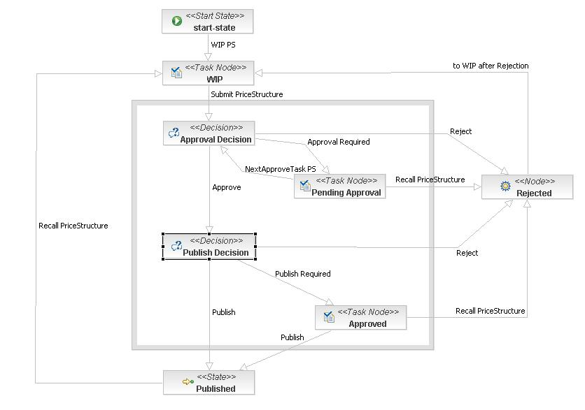

new WF_NS_PS_Generic()  Source: WF_NS_PS_Generic.js, line 14 Requires: module:GWF_Normalize module:BRMSConnector module:WF_NS_PriceStructure Requires module:GWF_Normalize module:BRMSConnector module:WF_NS_PriceStructure